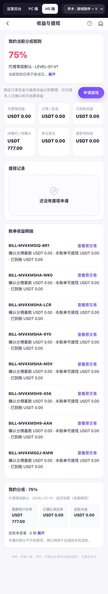
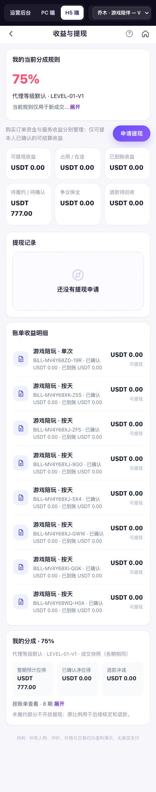
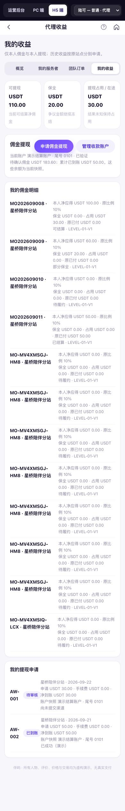
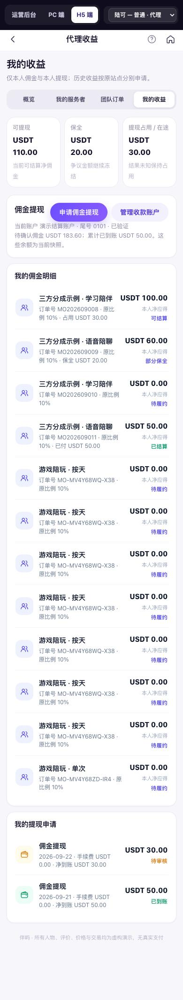
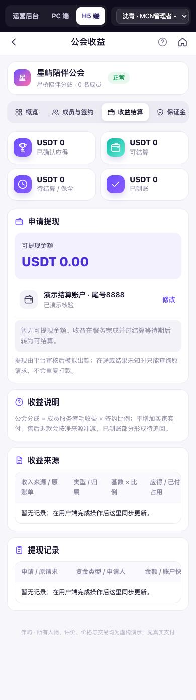
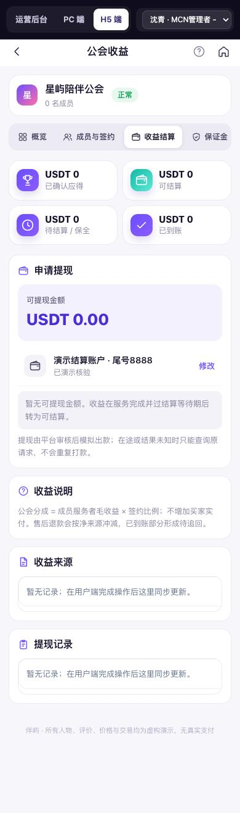
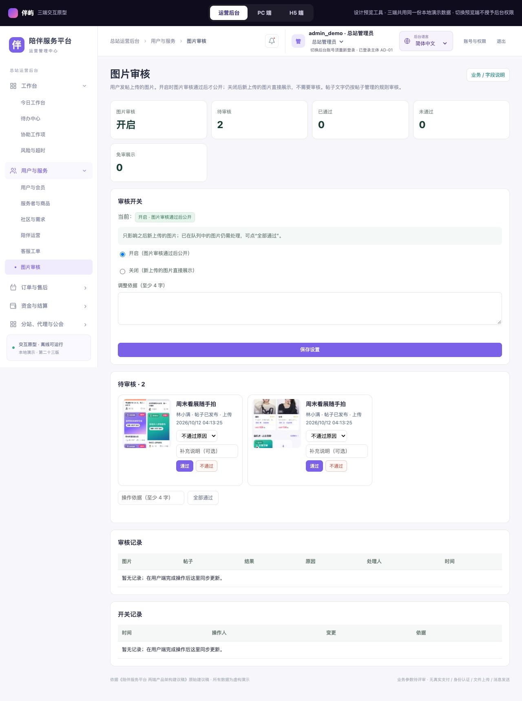
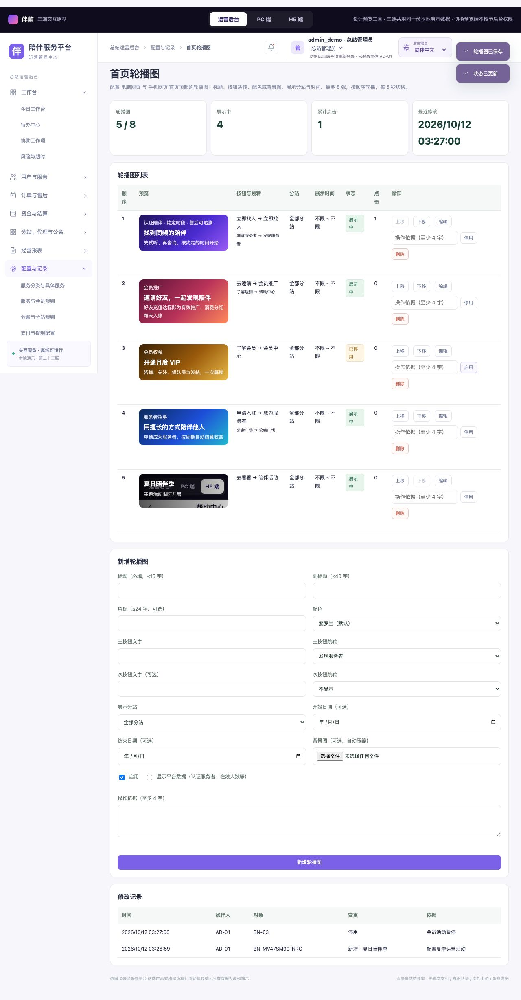

用户端体验优化 · 前后对比
原型 V23 · 2026-10。H5 宽 390，PC 宽 1280。截图为整页长图，点击查看原图。验证：Node 业务检查 210 组全部通过；浏览器真实点击 PC / H5：头像 5 步（scripts/avatars-check.cjs）、订单卡片与分站 5–6 步（scripts/cards-check.cjs）、帖子图片与审核 7 步（scripts/images-check.cjs）、轮播与图文流 8 步（scripts/feed-check.cjs）、体验 9 步（scripts/ux-check.cjs）、原有 V23 流程 20 步；73 个用户端页面 × 6 个身份遍历无死链、无脚本错误、H5 无横向溢出。
第五轮：头像选择与上传
选择头像（编辑资料）
原有 16 个人物头像作为默认头像库，可点选、选“不展示”或上传自己的照片（自动裁成正方形）；“当前”标出系统原先分配的头像。
运营后台 · 图片审核中的头像
上传的头像进入同一图片审核队列，标为“类型：头像”；开关关闭时直接展示（免审）。
“我的”头像
审核通过后开始展示；头像右下角的编辑标记可直接打开选择。
第四轮：订单卡片与记录行、用户端不显示分站、中文地点与时区
我的订单（订单卡片重新设计）
对方与身份标签、状态色（左侧色条 + 状态文字）、服务名称、时间（中文时区，如北京时间）、实付金额右对齐加粗、周期服务的服务期与结算进度、订单号与“联系服务者 / 主按钮”；主按钮随状态变化（确认服务、去履约、查看与评价）。待支付订单使用同一卡片。不再显示分站名称。
代理 · 团队订单
同一订单卡片：隐去买方，标注“代理快照：本人”，主按钮“经营详情”。
收益与提现 · 账单收益明细
原来是多行文字；现在每张账单一行：服务名称、账单号与已确认 / 已到账、右侧“可提现”金额，点击进入订单。提现记录同样改为记录行。


代理 · 我的收益
佣金明细与提现申请改为记录行，不显示分站；需补件时按钮保留在该行下方。


公会收益（H5 表格改卡片）
手机端的多列表格自动改为一行一张卡片（左侧字段名、右侧值）；公会名下不再显示分站。


第三轮：帖子图片与图片审核开关
发帖上传图片
发帖框新增“图片”区：最多 9 张，第一张为封面，可“设为封面”或移除；提示随审核开关变化。
运营后台 · 用户与服务 → 图片审核（新增）
审核开关（默认开启，关闭后新图直接展示，须填依据）、待审核图片逐张通过 / 不通过（选原因并通知作者）、全部通过、审核记录与开关记录；站长只读。

图文流使用通过审核的图片作封面
未审核的图片别人看不到；审核通过后第一张成为封面，右下角显示张数。
帖子详情图集
详情页顶部为可左右滑动的图集，只展示通过的图片；作者可看到审核中与未通过的状态。
第二轮：首页轮播、需求与社区图文流、列表页图文卡片
首页轮播图
顶部大图改为轮播：默认 4 张（找到同频的陪伴、邀请好友、开通 VIP、成为服务者），每 5 秒切换；PC 可点左右箭头，H5 可左右滑动，都可点圆点。内容在运营后台配置。
运营后台 · 配置与记录 → 首页轮播图（新增）
新增、编辑、排序、启用 / 停用、删除；可设标题、副标题、角标、配色或上传背景图（自动压缩）、主次按钮跳转、展示分站、开始与结束日期、是否显示平台数据；修改须填依据并留记录；统计点击次数；站长只读。

需求与社区（小红书式图文流）
原来是文字列表；现在是发现 / 需求 / 社区 / 我的发布页签 + 10 个分类 + 搜索 + 综合 / 最新排序，PC 4 列、H5 2 列瀑布流图文卡片：封面、标题、作者、点赞；需求卡显示预算与申请人数；右上角“发布”可选发需求或发帖子。
陪伴活动
活动改为带封面的图文卡片。
组队房
房间改为封面卡片：进行中标记、话题、成员头像、人数与麦位。
公会广场
公会卡片加彩色封面头部。
关注与常约
关注的服务者改为照片卡片（与发现页一致），卡片下方保留再次预约、上线提醒、取消关注。
第一轮：长文字页面、帮助与客服、设置与协议、订单详情
帮助中心
原来是约 4,000 字的规则长文；现在是搜索 + 6 个分类 + 17 个常见问题 + 联系客服，原有规则与演示说明收进页尾折叠区。
订单详情（服务者视角）
先看订单与结算，分成合并为一张汇总（按期明细可展开），评价移到页尾。
设置
设置中心：账号与安全、消息通知开关、隐私与互动、帮助与协议，语言放在最后。
注册
演示说明收成小标签；协议可直接以浮层打开，不离开表单。
发现
卡片价格标签修正为 USDT。
确认预约
规则改为勾选清单；手机端提交按钮吸底。
收益与提现
分成卡合并为一张汇总。
会员推广
长说明收为摘要。

确认支付
演示说明收成标签。
我的
长说明与演示说明收起。
服务者主页
同上。
联系客服（新增）
提交工单 → 后台“客服工单”回复 → 用户收到通知并在“我的工单”看到回复。